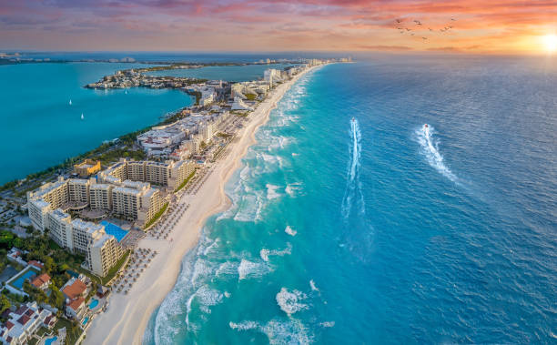
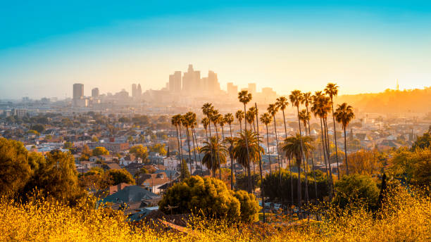

América
Río de Janeiro
Podras conocer la belleza de el paisaje brasileño, lleno de increibles monumentos, combinando unas playas y unos zonas unicas de este maravilloso pais, combinado con grandes sorpresas que tenemos preparadas para ti

Cancún
Si lo que buscas son hermosas playas, tiempo de calidad para relajarte y olvidarte de todo un poco, este es tu lugar, con unas zonas y unos hoteles increibles, llenos de lujo y actividades, este lugar es unico, a parte del gran encanto de mexico, pudiendo adentrarte en zonas locales y sin olvidarnos de desgustar esta gastronomia unica y deliciosa

Los Ángeles
Los angeles, una ciudad unica, con muchisimas referencias al munde del cine, y una culura extravagante y unica que te encantara visitar, sus grandes lugares de ocio no te dejaran indiferentes

Nueva York
Un destino único, lleno de una ciudad inmensa, con grandes rascacielos, miradores espectaculares, una historia increible, y con un encanto unico en cada rincon, sin duda Nueva York, es un destino que al menos hay que hacer una vez en la vida, desde lujos y todo tipo de tiendas, hasta una cultura y unos museos unicos en el mundo, por no hablar de que si te cansas de tanto edificio, tenemos uno de los grandes parques del mundo, Central Park, con unos senderos y unos rincones llenos de encanto y vegetacion